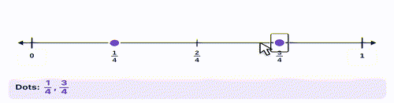

What it is
A ruler for numbers. Distance shows size, and hops show adding and taking away.
The same line works for whole numbers, fractions, decimals, measurement and time. That is why it shows up in every grade.
How to use the tool
- Drag a dot from the cup onto the line. It snaps to a mark.
- Slide a dot along the line, or drag it off.
- Turn on Hops and drag from one mark to another to show a jump.
- Have students say the number at each dot before checking.

Try this with your class
Where does 1/3 go on a line from 0 to 1?
- Ask first: is 1/3 more or less than 1/2?
- Split the line into 3 equal parts. 1/3 is the first mark.
- Then place 1/4. Which is closer to 0? Why?
Students who think 1/4 is bigger "because 4 is bigger than 3" can see it isn't.
Watch for
Counting marks, not spaces.A hop of 1 starts at 0 and lands on 1. It doesn't count the 0.
Uneven spacing.On a drawn line, the gap from 0 to 10 must match 10 to 20.
Bigger denominator, bigger fraction.Place both on the line and compare.